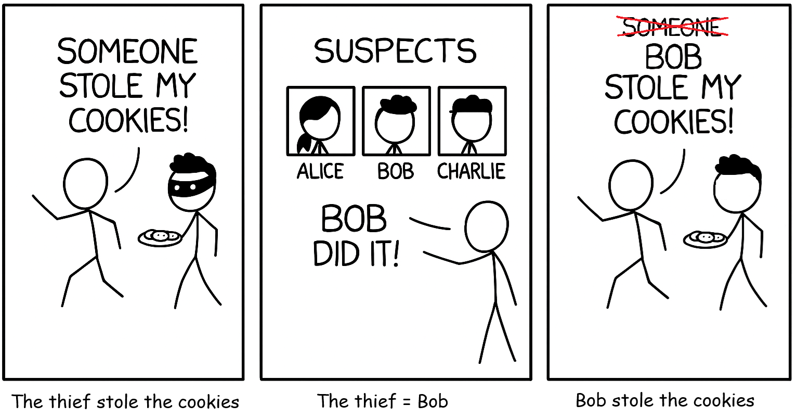

1. Simplify 32 + 2 · 4 − 1
9 + 8 − 1 = 16
2. How are 2x + 5 and 5 + 2x different? How are they the same?
Same value for every x. Addition can be done in either order.
3. A student evaluates (−3)2 and gets −9. Correct? Why?
No. (−3)2 = 9. The parentheses square the negative too. −32 is the one that equals −9.
Substitute: 4( 3 ) + 1
Simplify: 4(3) + 1 = 12 + 1 = 13

The story: 4x + 1
The unknown thief: x
The thief is Bob: x = 3
Bob stole the cookies: 4x + 1 = 13
3 − 2(−4) = 3 + 8 = 11
5(−3) − 2 = −15 − 2 = −17
2(1 + 3)2 = 2(4)2 = 2 · 16 = 32
3(2 − (−4)) + 5((−4) − 2)
= 3(6) + 5(−6) = 18 − 30 = −12
20(5 − 2) + 2(5)2 = 20(3) + 2(25) = 60 + 50 = 110
2(2) − 3(1) = 4 − 3 = 1
12(7) − 3(−3)2 = 84 − 3(9) = 84 − 27 = 57
12(4)2 − 3(3) = 12(16) − 9 = 8 − 9 = −1
5(9) − 25 = 45 − 25 = 20
5(9 − 5) = 5(4) = 20
Conclusion: same result, so this is evidence they are equivalent
3(2 − 1) = 3(1) = 3
3(2) − 2 = 6 − 2 = 4
Conclusion: 3 and 4 are different, so they are not equivalent
y = 0: 6(0) = 0 2(0) = 0 y = 3: 6(3) = 18 2(3) = 6
Conclusion: not equivalent (18 and 6 are different)
9(2) − 3 = 18 − 3 = 15
3(3(2) − 2) + 3 = 3(4) + 3 = 15
This tells me: evidence they are equivalent, but we do not know for certain
1. To evaluate an expression means to find its value.
2. When you see =, think “is”.
3. In 3 − 2x with x = −4, write −4 in parentheses: 3 − 2(−4).
4. At x = 2, 3(x − 1) is 3 and 3x − 2 is 4. They are not equivalent.
5. At x = 9, 5x − 25 and 5(x − 5) both give 20. This is evidence that they are equivalent.
1. 3x + 4 when x = 5 = 3(5) + 4 = 19
2. 7 − 2x when x = −3 = 7 + 6 = 13
3. 2x2 when x = 2 = 2(4) = 8
4. 12x + 3 when x = 6 = 3 + 3 = 6
5. −x + 7 when x = −2 = 2 + 7 = 9
6. x + x + x when x = 4 = 12
7. 2x + 3x when x = 2 = 4 + 6 = 10
8. x2 + 3x2 when x = 1 = 1 + 3 = 4
9. 5x − 2x + 4 when x = 3 = 15 − 6 + 4 = 13
10. 2(x + x) + 1 when x = −1 = 2(−2) + 1 = −3
11. 2(x + 3)2 when x = 1 = 2(16) = 32
12. 3(x − 2)2 + 4 when x = 3 = 3(1) + 4 = 7
13. (2x + 1)(x − 1) when x = 2 = (5)(1) = 5
14. (x + 2)2 − 3x when x = 1 = 9 − 3 = 6
15. 3(x + 4)2 when x = 2 = 182 = 9
16. 2a − 3b; a = 3, b = 5 = 6 − 15 = −9
17. 4x + 2y; x = 2, y = −1 = 8 − 2 = 6
18. 12x2 − 3y; x = 4, y = 3 = 8 − 9 = −1
19. 3x − 2y + z; x = 1, y = 2, z = 5 = 3 − 4 + 5 = 4
20. (x + y)2 − xy; x = 2, y = 3 = 25 − 6 = 19
| Pair | Work | Conclusion |
|---|---|---|
| 21. 2(x + 3) and 2x + 6; x = 4 | 2(7) = 14 and 2(4) + 6 = 14 | equivalent |
| 22. 4x + 2x and 6x; x = −1 | −4 + (−2) = −6 and 6(−1) = −6 | equivalent |
| 23. x2 + 2x + 1 and (x + 1)2; x = 2 | 4 + 4 + 1 = 9 and (3)2 = 9 | equivalent |
a=1, b=1: 3(2) − 2(0) = 6 and 1 + 5 = 6
a=2, b=−1: 3(1) − 2(3) = −3 and 2 − 5 = −3
Both pairs match, so they pass every test so far.
a=1, b=2: 2(9) − 2 − 8 = 8 and 2(4) = 8
a=2, b=1: 2(9) − 8 − 8 = 2 and 2(1) = 2
Both pairs match, so they pass every test so far.